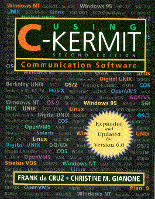

Using C-Kermit, Second Edition, by Frank da Cruz and Christine M. Gianone, Digital Press / Butterworth Heinemann, 1997; 622 pages. ISBN 1-55558-164-1. Digital Part Number EY-U041E-DP.
"For those of us that communicate in heterogeneous environments ... this book is perfect. ... I personally think that every professional sys admin should take a look at this book and get a copy of the package from Columbia University..."
- Jim Dennis, Sys Admin Magazine, July 1997
For those who insist that computer documentation is, by nature, turgid, obtuse, and boring, you haven't read anything by Frank da Cruz and Christine Gianone. Technical writers take note: *this* is how you do it.Since its modest beginnings in 1985, C-Kermit has grown into a powerful and complex communications and scripting program, the most portable of all communication software programs, running in its most common form on all types of UNIX systems and derivatives -- hundreds of them -- from desktop PCs to mammoth supercomputers; on Digital's OpenVMS operating system across the entire VAX and Alpha lines. In the mass market, C-Kermit also forms the basis for the new shrink-wrapped Kermit software products for Microsoft Windows 95 and NT. Versions of C-Kermit are also available for such diverse platforms as the Apple Macintosh, the Commodore Amiga, Bell Labs Plan 9, Stratus VOS fault-tolerant systems, Data General AOS/VS, and Microware's OS-9 realtime operating system for PCs, as well as the new BeBox.
- Rob Slade, comp.dcom.telecom, June 1997
C-Kermit is a full-function communications software program for serial-port connections (modem or direct) and also for network connections via TCP/IP, X.25, and other networking methods. It offers automatic dialing, terminal connection (and in the Windows and OS/2 versions, emulation of many types of terminals), fast and robust error-free file transfer, a vast array of national and international character-set translations, and a powerful scripting language for automation of all communications-related tasks.
The first release of C-Kermit in its present form was 5A(188), in 1992, accompanied by the first edition of Using C-Kermit. Like the other books in the Kermit series, Using C-Kermit has been a long-lasting best seller by computer-book standards in its original English edition as well as in German translation as "C-Kermit - Einführung und Referenz" from Verlag Heinz Heise in Hannover.
In the intervening years, C-Kermit has gone through a series of incremental changes, adding capability after capability. Now, four years later, it has evolved to such a degree as to seem like a completely different program. Furthermore, its role has changed. Increasingly, it is the communications and scripting "engine" behind the menu, the automated system, the graphical user interface.
The new second edition of Using C-Kermit serves as the universal technical reference on C-Kermit as it applies to all the platforms it runs on. Like the first edition, it covers data communications in general, and all of the specific capabilities of C-Kermit in particular. Unlike most other computer manuals, but like the first edition, it takes pride in explaining things to give readers a good understanding of the tremendously complicated world of data communications and networking, particularly in the international arena. This is why Kermit books, unlike practically any other software manuals, are also used as textbooks in university and professional development courses.
The new edition includes a revised and updated tutorial on data communications, with new emphasis on today's high-speed modems and how to make the best use of them, and it covers all the features added to C-Kermit since version 5A(188). Some of the more noteworthy ones include:
As the world becomes increasingly hooked-up, wired, and online, sophisticated tools like C-Kermit will be increasingly in demand -- by systems integrators, network managers, Internet service providers, makers of turnkey systems of all kinds, government contractors, and workers in every field where automated communication must take place. At the same time, C-Kermit will be in the hands of ever-increasing numbers of end-users, primarily in its shrink-wrapped form as Kermit 95 for Windows 95, Windows NT, and OS/2. Using C-Kermit is, of course, included in the Kermit 95 package, and even the most "naive" users find themselves turning to it because it is so packed with information, and at the same time so accessible and easy to use.